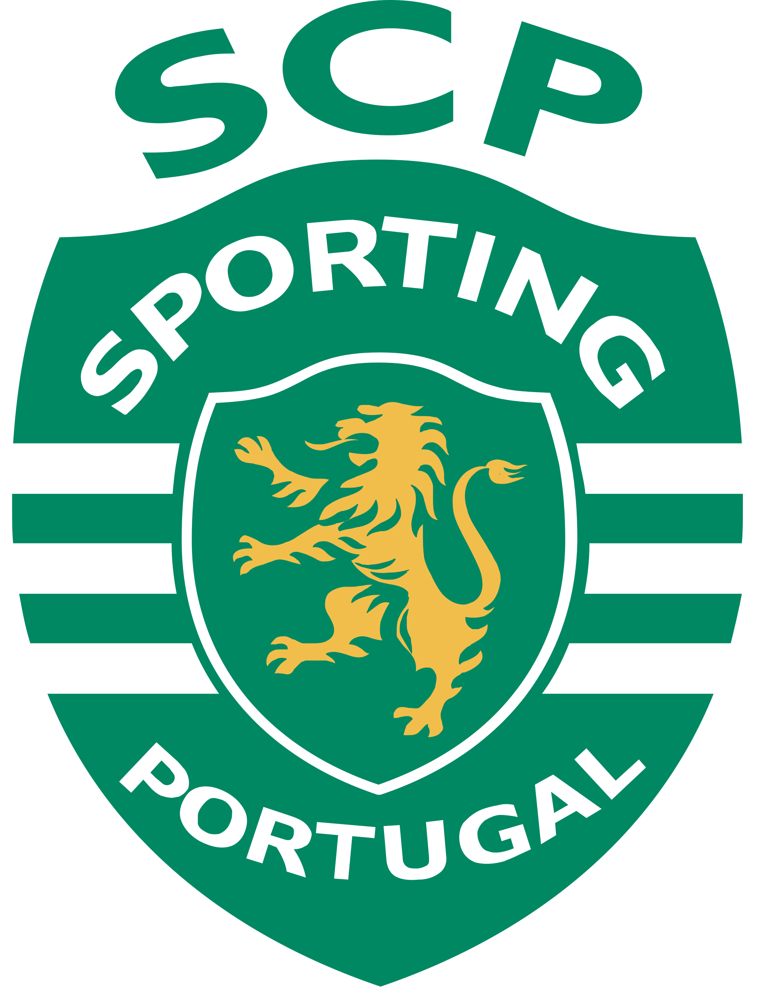
2002-2003
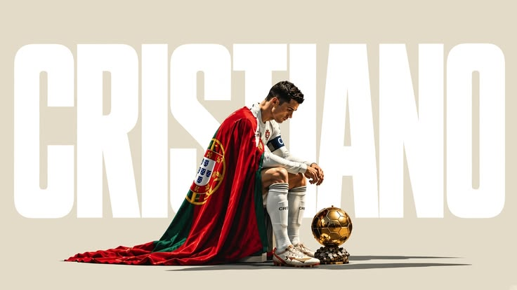
Cristiano Ronaldo dos Santos Aveiro est né en 1985 à Funchal, sur l'île portugaise de Madère. Il quitte la maison enfant pour rejoindre l'académie du Sporting CP, et Sir Alex Ferguson le recrute à Manchester United en 2003. Il y devient une star mondiale et remporte la Ligue des champions ainsi que son premier Ballon d'Or en 2008. Son transfert au Real Madrid en 2009 ouvre le chapitre le plus prolifique de sa carrière : il devient le meilleur buteur de l'histoire du club et remporte quatre Ligues des champions supplémentaires. Après un passage à la Juventus et un retour à Manchester United, il rejoint Al-Nassr en 2023. Avec le Portugal, il remporte l'Euro 2016 et la Ligue des nations, et détient le record de meilleur buteur du football international. Admiré pour sa discipline, son athlétisme et sa puissance aérienne, il a redéfini ce que signifie être un buteur complet.
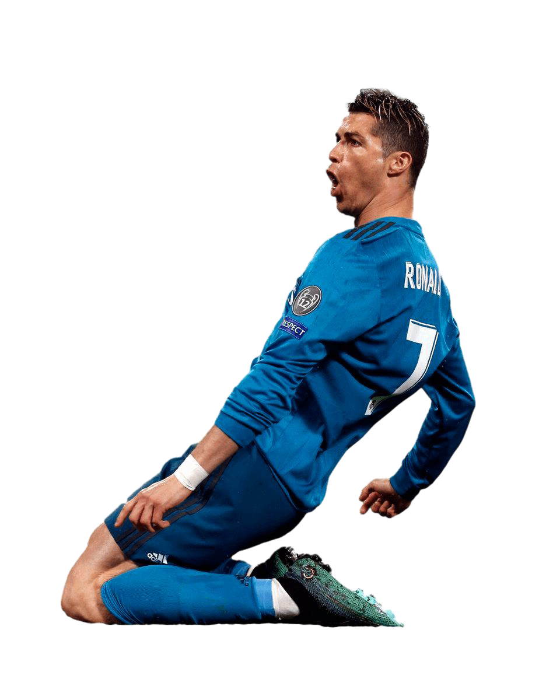

2002-2003

2003-2009 / 2021-2022
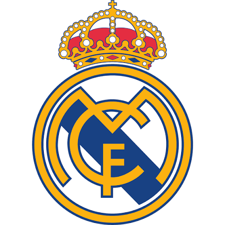
2009-2018
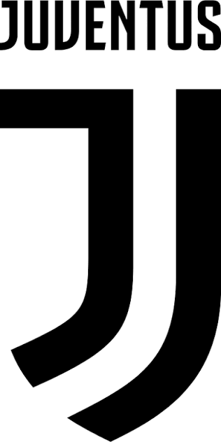
2018-2021

Depuis 2023
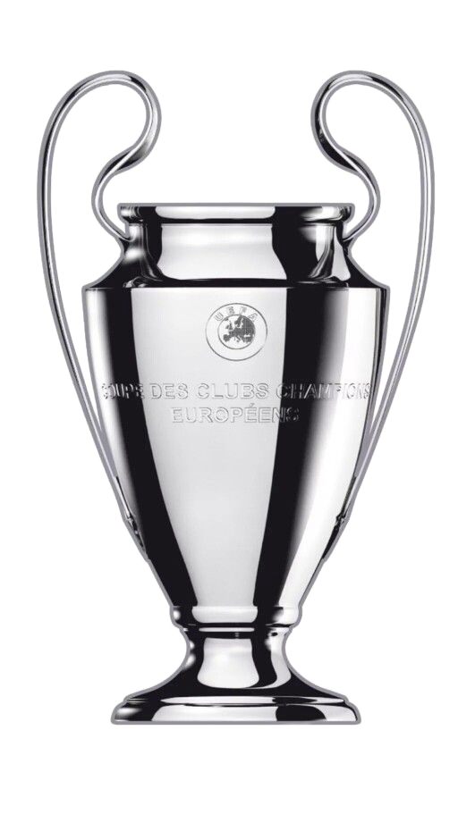
2008, 2014, 2016, 2017, 2018
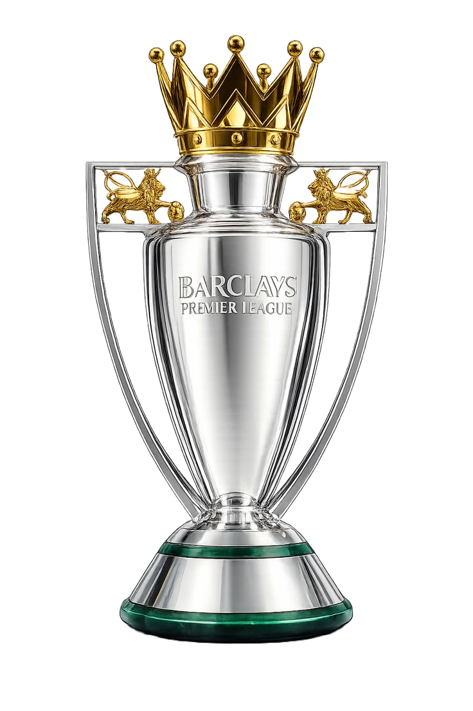
2007, 2008, 2009
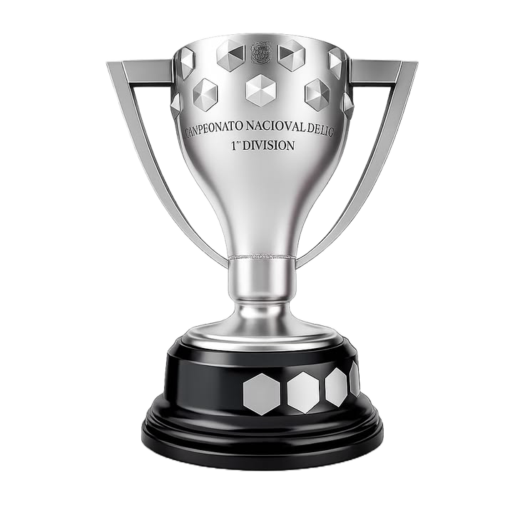
2012, 2017
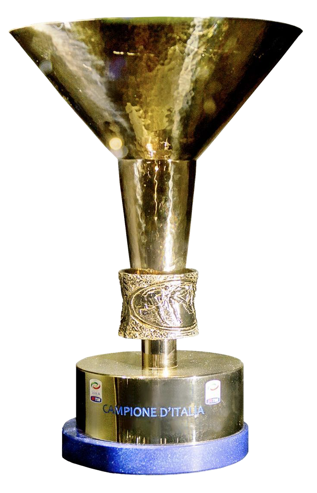
2019, 2020
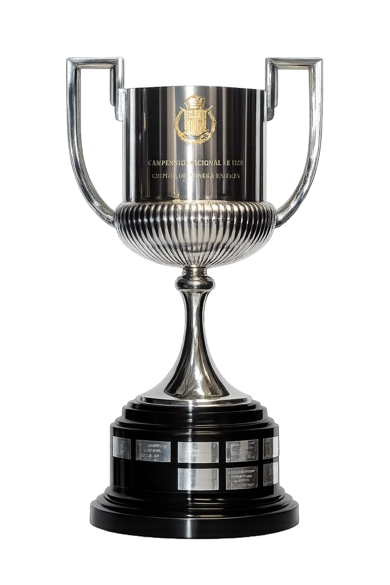
2011
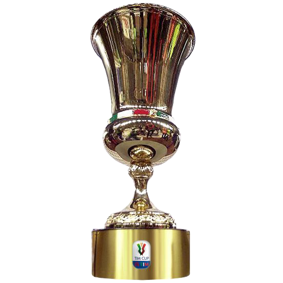
2021
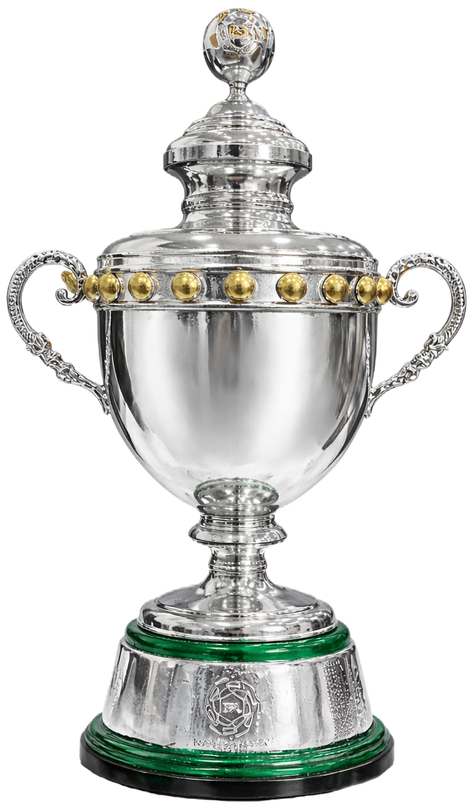
2004
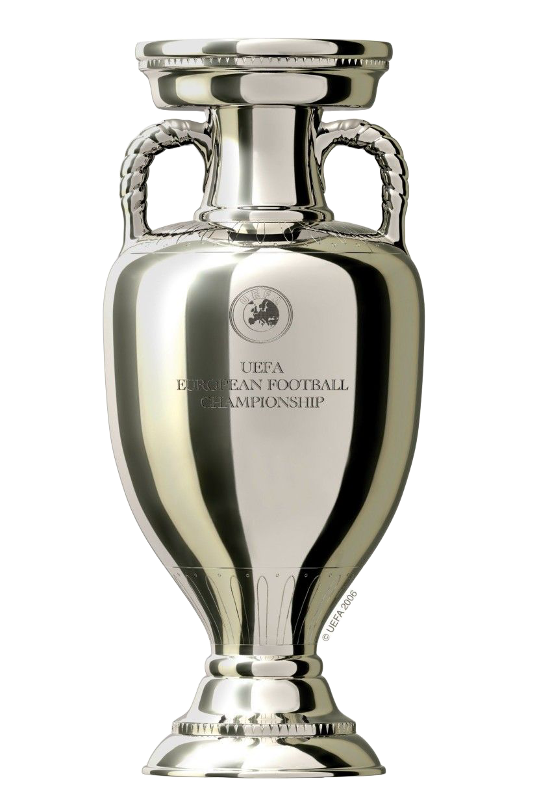
2016 (Portugal)
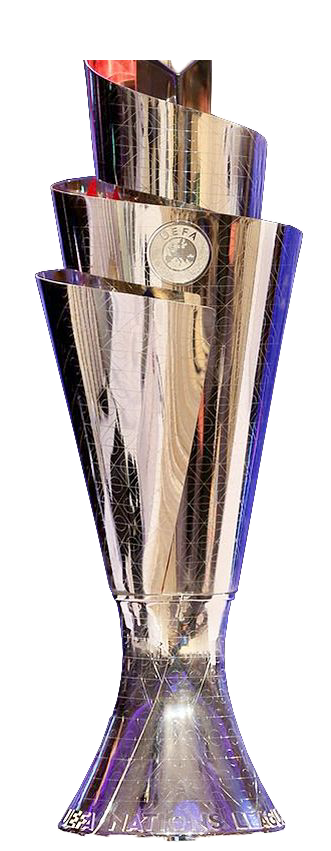
2019, 2025 (Portugal)
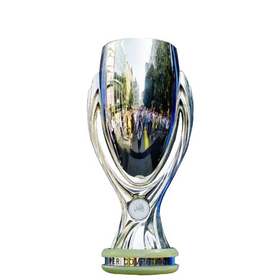
2014, 2016, 2017
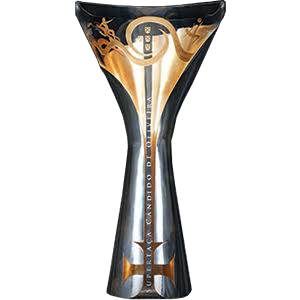
2002
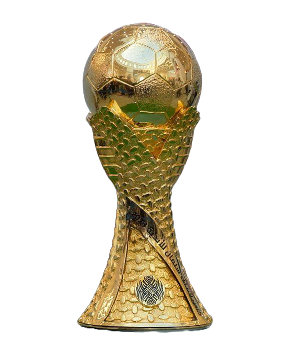
2023

2008, 2013, 2014, 2016, 2017
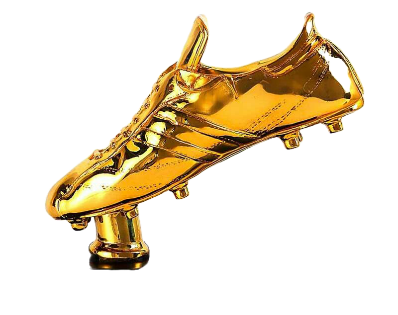
2008, 2011, 2014, 2015
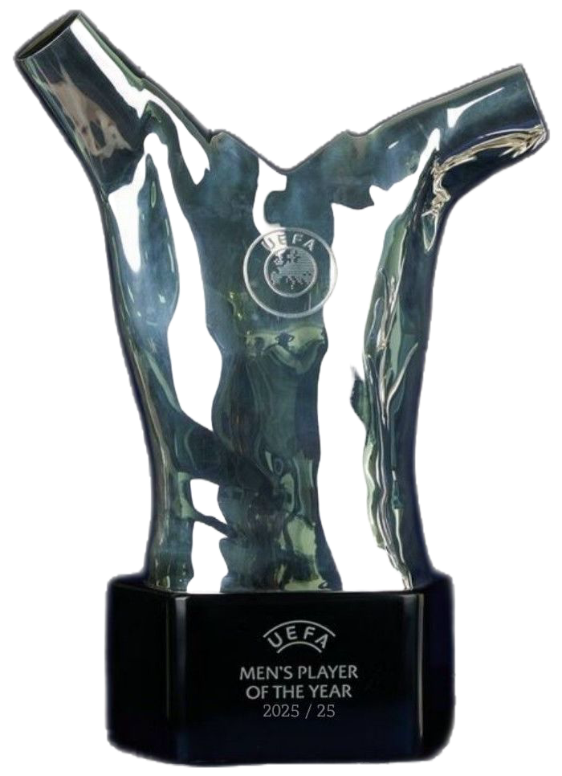
2014, 2016, 2017